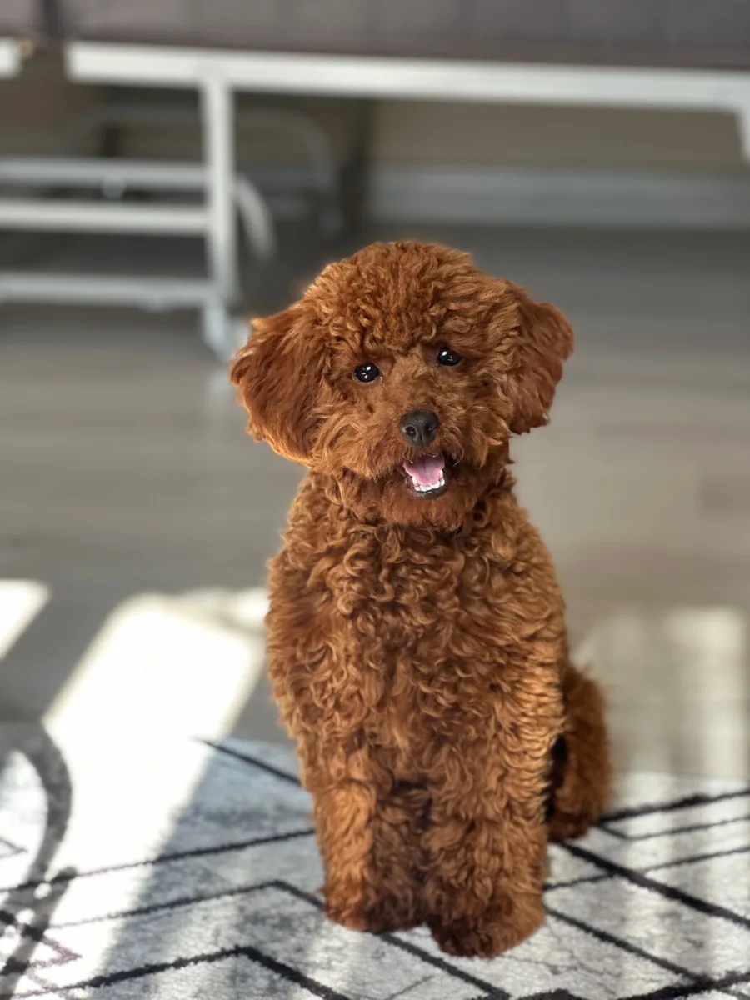
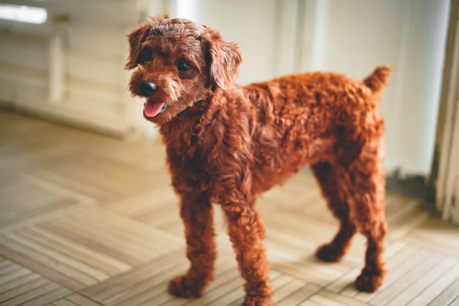
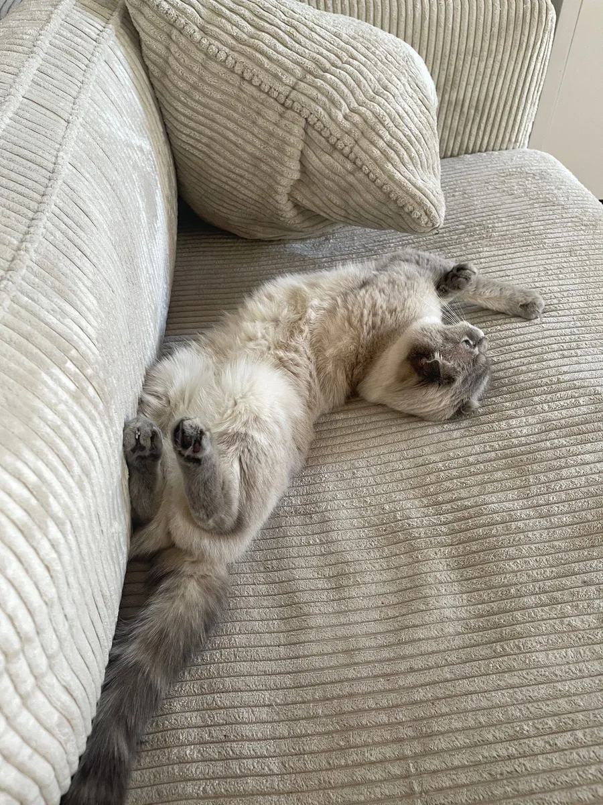

ძაღლი
დაბანა და გაშრობა
მოვლის დემო სერვისი ბეწვის თავისებურებების გათვალისწინებით.
მეტი სითბო. მეტი ყურადღება.
გრუმინგის მშვიდი სივრცის კონცეფცია თქვენი ძაღლისა და კატის ყოველდღიური მოვლისთვის.

01 / მოვლის მიმართულებები
დემო სერვისები. რეალური მომსახურება, შესაბამისობა და პირობები წინასწარ უნდა დადასტურდეს.
მოვლის დემო სერვისი ბეწვის თავისებურებების გათვალისწინებით.
ფორმისა და სასურველი სტილის წინასწარი განხილვის კონცეფცია.
ინდივიდუალური ბეწვის მოვლის დემო მიმართულება.
კატის მოვლის ფორმატი წინასწარი შეთანხმებით.
მოვლის დეტალები განიხილება შესაბამისი სპეციალისტის მიერ.
პირველ ვიზიტამდე ჩვევებისა და საჭიროებების გაცნობის დემო.

ძაღლებისთვის
მონიშნე ძაღლის მოვლა — ფორმაში შესაბამის სერვისებს ნახავ.

კატებისთვის
მონიშნე კატის მოვლა და მოითხოვე ფორმატის წინასწარი განხილვა.
02 / პაკეტების დემო
ყველა ფასი გამოგონილია. რეალური შეთავაზება ცალკე უნდა დაზუსტდეს.
დემო პაკეტი / 01
ძაღლის საბაზისო მოვლის კონცეფცია.
დემო პაკეტი / 02
ძაღლის მოვლისა და სტილის კონცეფცია.
დემო პაკეტი / 03
კატის მოვლის ინდივიდუალური კონცეფცია.
03 / პატარა მეგობრების გალერეა
საილუსტრაციო ფოტოები — არა ამ სტუდიის კლიენტები, თანამშრომლები ან შედეგები.
მანამდე / შემდეგ — ფუნქციის დემო
ორივე მხარეს ერთი და იგივე ფოტო დგას. სლაიდერი აჩვენებს მხოლოდ ვებგვერდის ფუნქციას.
04 / როგორ იწყება ვიზიტი
ძაღლი თუ კატა — ფორმაში მონიშნე სასურველი მოვლა.
შეავსე სასურველი დღის და საკონტაქტო ინფორმაციის დემო.
რეალურ სტუდიაში დრო, ფასი და მომსახურება პირადად დასტურდება.
05 / გრუმინგის გამოცდილების კონცეფცია
საუბარი პატრონთან და ცხოველის ჩვევების გაცნობა.
ბეწვის თავისებურებებისა და სასურველი ფორმატის განხილვა.
რეალური მომსახურება სრულდება წინასწარ შეთანხმებული პირობებით.
დეტალების გაზიარება პატრონთან ვიზიტის დასრულებისას.
გრუმერები და სერვისები დემოა; რეალური კვალიფიკაცია ან უსაფრთხოების გარანტია არ არის ნაგულისხმევი.
06 / ხშირად დასმული კითხვები
შეავსეთ ქვემოთ მოცემული დემო მოთხოვნა. საიტი არ აგზავნის მონაცემებს და არ ქმნის რეალურ ჯავშანს. რეალურ სტუდიაში დრო უშუალოდ უნდა დადასტურდეს.
დემო კონცეფცია ორივე მიმართულებას აჩვენებს. კონკრეტული მომსახურება და მისი შესაბამისობა რეალურ სპეციალისტთან წინასწარ უნდა შეთანხმდეს.
აქ ნაჩვენებია გამოგონილი დემო ფასები. რეალური ფასი შეიძლება დამოკიდებული იყოს მომსახურებაზე, ზომაზე და მოვლის მოცულობაზე; მოითხოვეთ წინასწარი შეთავაზება.
რეალურ სტუდიას წინასწარ გაუზიარეთ ცხოველის ჩვევები და მნიშვნელოვანი საჭიროებები. ვიზიტის კონკრეტული პირობები მათთან დააზუსტეთ.
არა. ფოტოები საილუსტრაციოა. შედარების სლაიდერის ორივე მხარეს ერთი და იგივე ფოტო დგას — გრუმინგის შედეგი არ არის ნაჩვენები.
ფორმის მონაცემები არ ინახება და არ იგზავნება. წარმატებული დემოს შემდეგ ველები იწმინდება. ბრაუზერში ინახება მხოლოდ არჩეული ენა, თუ ეს ნებადართულია.
07 / ვიზიტის მოთხოვნის დემო
აირჩიე მეგობარი და სასურველი სერვისი. ფორმა მონაცემებს არ აგზავნის და რეალურ ჯავშანს არ ქმნის.
WhatsApp დემო · მიმღებს თავად ირჩევთ · ნომერი დასამატებელიამონაცემები არ გაგზავნილა. რეალური ვიზიტი არ დაჯავშნილა.
08 / სად შეგვხვდებით
რეალური მდებარეობა არ არის მითითებული
09 / კონტაქტი
ტელეფონი და ელფოსტა: დემო / დასაზუსტებელია